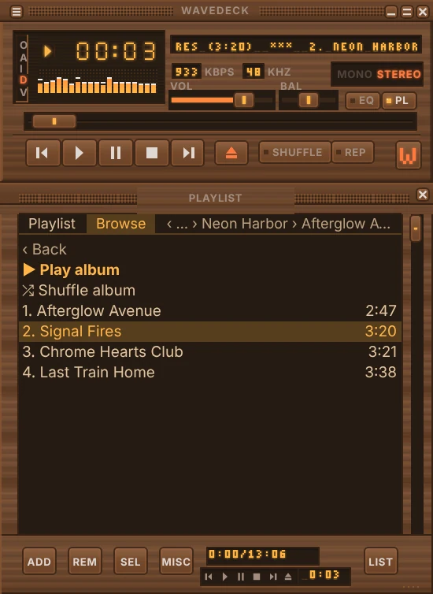
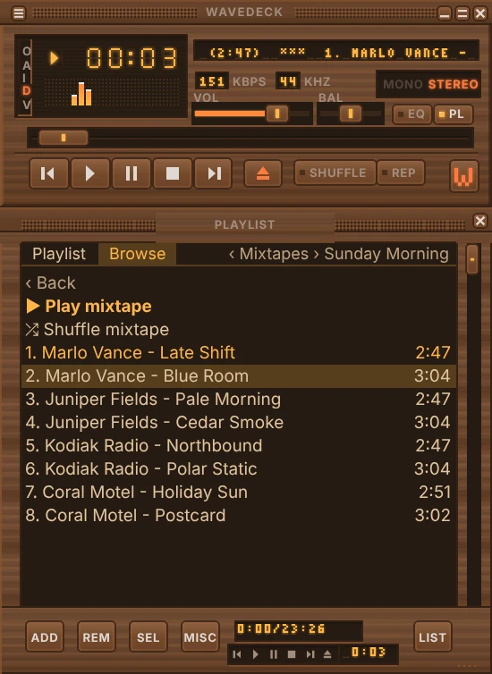
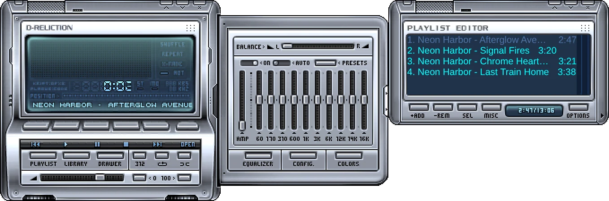
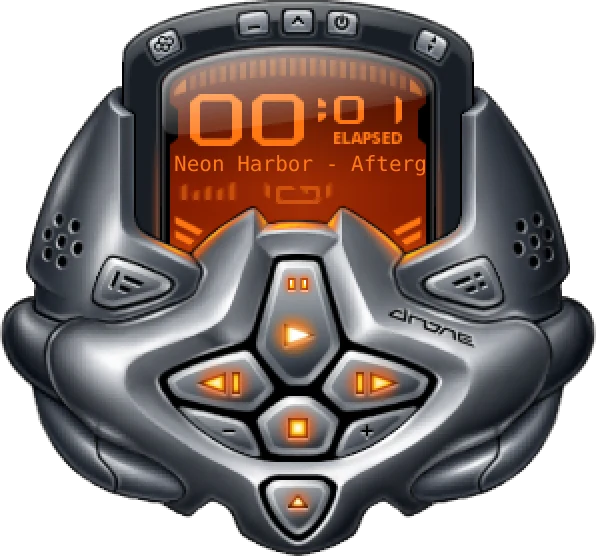
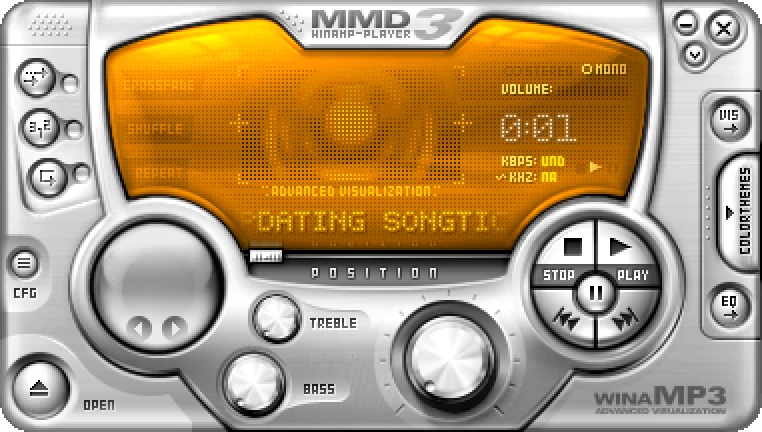
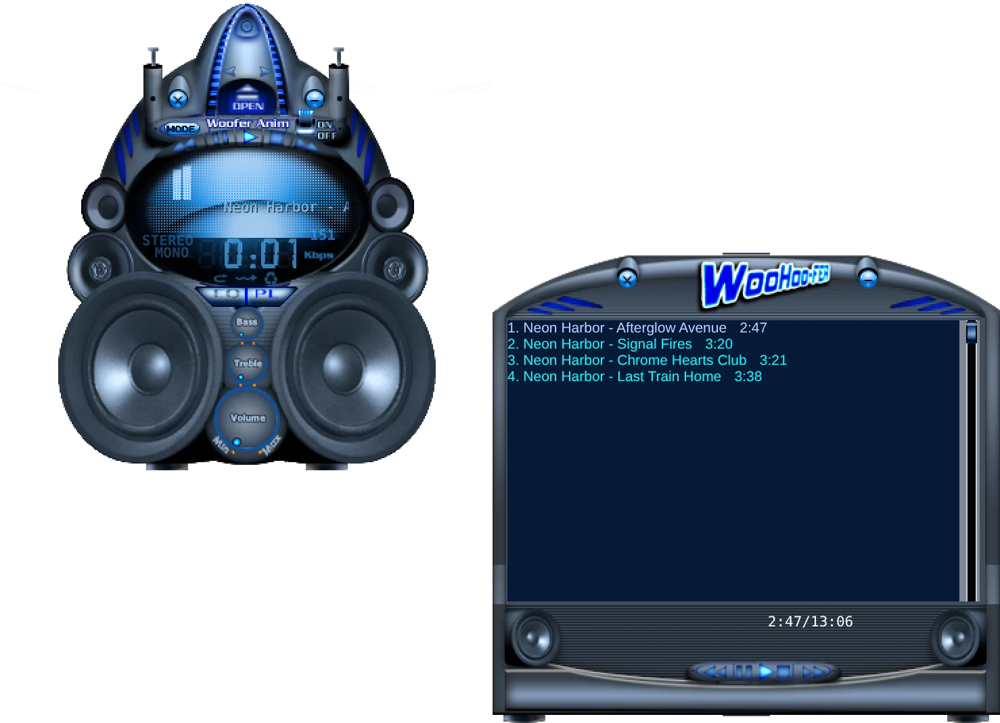
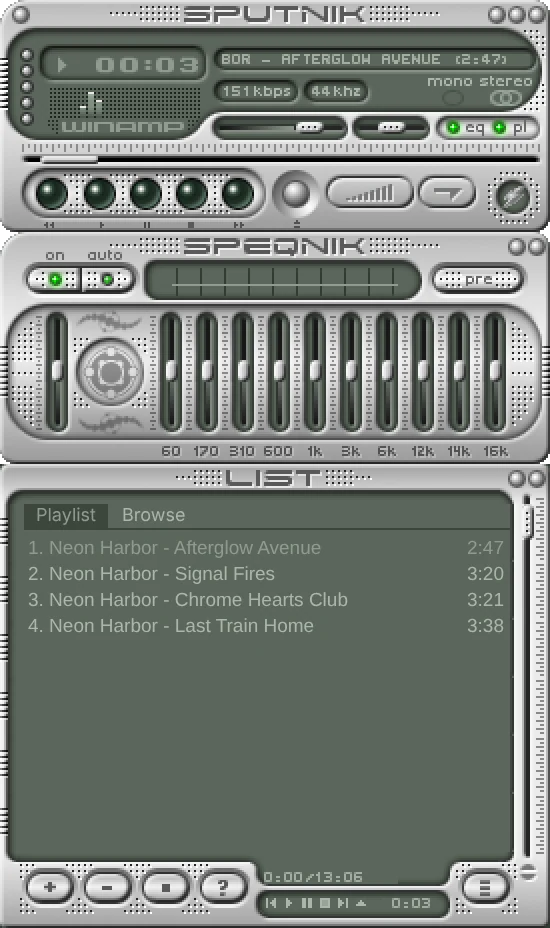

Classic player. Modern library.
Wavedeck is a free music player for Windows. FLAC and MP3, a 10-band equalizer, Milkdrop visualizations and the classic skins you remember, plus a media library that sorts your collection by artist and album, streams from your NAS or Navidrome server, and lets you make your own mixtapes.
Free and open source. Windows 10 and 11, 64-bit.

Every one of these was made in Theme Studio. No drawing involved.
Your collection, sorted by artist, album and song
Point Wavedeck at your music folders: local drives, USB drives or a network share like \\NAS\Music. It reads your tags and cover art and builds a library you can browse by artist, album, song or genre, with search across all of it.
Running Navidrome, Jellyfin or another Subsonic-compatible server? Connect it once and stream from it, no copying files around.
Rescans only touch files that changed, so big collections stay quick.

Browse your server right in the playlist
Switch the playlist window to its Browse tab and step through your music by artist, album and song. Double-click a song and its album starts from there. Your Navidrome server's own playlists and recently added albums are in there too.
Shuffle all songs pulls random tracks from your whole collection and keeps the queue topped up, so the music never runs out.
The arrow keys, Enter and Backspace get you around, and the tab takes on the colors of whatever theme you're using.

Make mixtapes
Mixtapes are your own playlists, kept inside the player. Give each one a name, like Sunday Morning or Road Trip, and fill it from anywhere: right-click a song, an album, an artist or a few playlist rows and add them to a tape.
One mixtape can hold songs from your PC and songs from your server side by side. Reorder, rename or play them from the Browse tab, or shuffle a whole tape.

Make a theme without drawing a pixel
Theme Studio builds a complete skin from choices instead of artwork. Start from a style, pick your colors or pull them from a photo, choose a finish like brushed metal, wood or frosted glass, and set the bevels, roundness and glow with sliders.
Type something like “neon pink tokyo night” to get a starting point, or hit Surprise me. Every change shows up live on the player.
Themes are redrawn at whatever size you scale the player to, so they stay sharp on a 4K screen. Save one and share the small .wdskin file.


Bring your old skins, even the strange ones
Classic Winamp .wsz skins work as they always did, including shaped ones cut to their own outline. Modern Winamp 5 skins (.wal) float on your desktop in whatever shape the artist drew, with their own drawers, equalizers and playlist windows.
Every button and slider on a skin drives Wavedeck, so your library, mixtapes and server streaming come along. Windows Media Player, Sonique and K-Jofol skins load too. Drop one on the player to try it.





Where to find skins
- Winamp Skin MuseumTens of thousands of classic
.wszskins, searchable, with a preview of each one.Created by Jordan Eldredge, who also made Webamp, the engine behind Wavedeck’s modern skins. - WinCustomizeA long-running archive of Winamp skins, including modern
.walskins.Run by Stardock and its community of skin artists.
Download a skin, then drop the file on Wavedeck. To keep it in the Skins menu, put it in the skins folder (right-click → Skins → Open skins folder).
Skins shown are the work of their original artists, pictured running in Wavedeck.
Everything you’d expect from the classic
- Sound
- FLAC, MP3, OGG, Opus, WAV and M4A. Preamp plus 10-band equalizer with 18 presets, your own presets, and per-song EQ memory.
- Skins
- Loads classic
.wszskins (shaped ones too) and modern Winamp 5.walskins, plus Windows Media Player and Sonique skins. Drag one onto the player to apply it. - Visuals
- Spectrum analyzer and oscilloscope in the main window, and a full visualization window with thousands of Milkdrop presets.
- Sizing
- Drag any edge to scale the whole player. Sizes snap to whole pixels so skins never go blurry.
- Playlists
- Drag and drop, reorder, sort, crop, remove duplicates, jump to file, and M3U or PLS load and save.
- Keyboard
- Z X C V B for transport, L to open, J to jump, plus global media keys.
- Plugins
- JavaScript plugins can add visualizers, audio effects and menu items. A “now playing” file for OBS is included.
- Mixtapes
- Make your own playlists right in the player, mixing local files and songs from your server on the same tape.
- Browse
- A Browse tab in the playlist window takes you from artist to album to song, and Shuffle all plays your whole server endlessly.
- Library
- Artist, album, song and genre views, cover art, search, and streaming from your own music server.
Download Wavedeck
Free, no account, no ads.
Windows 10 or 11, 64-bit. The first time you run it, Windows may show a SmartScreen notice because the app isn’t code-signed yet. Choose “More info”, then “Run anyway”.